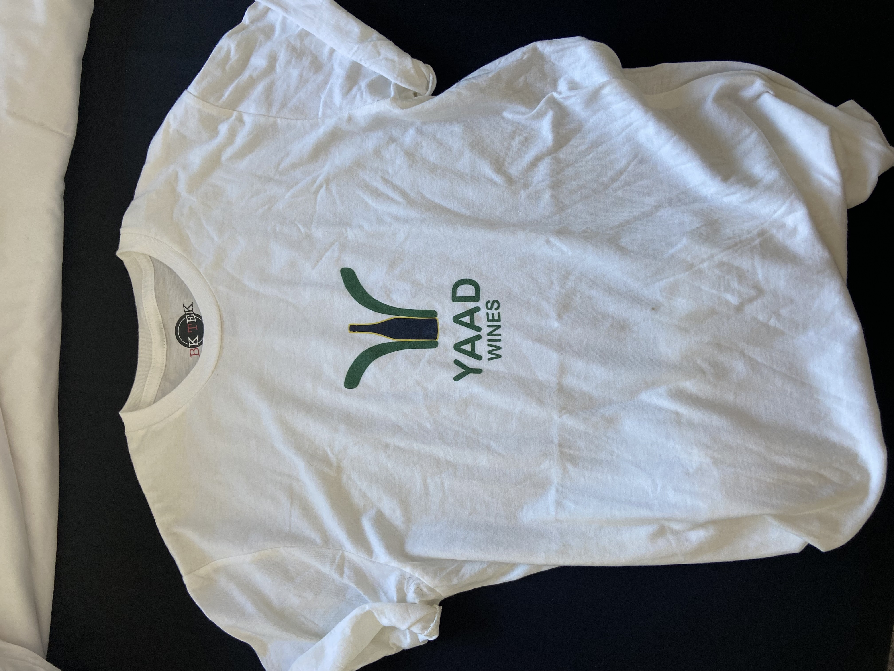
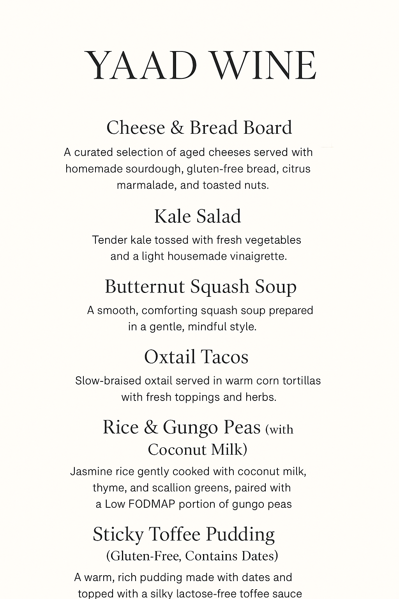
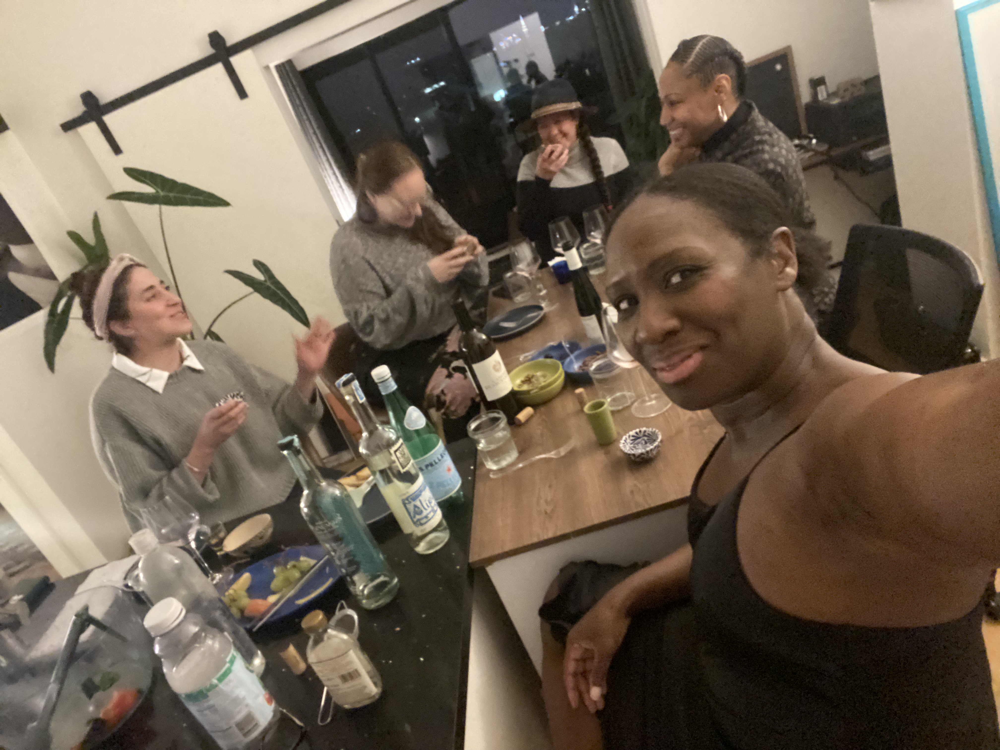

Standing outside in the hot-ass sun somewhere around Flatbush Ave., waiting for a wine appointment that was already 30 minutes late.
Honestly, I would have just canceled.
But my next appointment wasn't for another two hours, so I waited.
With nowhere to sit.
Drunk people, homeless people, everybody seems to be walking by smoking, chatting me up, or just staring.
Funny how the smell of cigarettes feels like the worst thing in the world when it's hot and humid and you're standing on Flatbush.
I had to relax somehow.
So naturally, I started thinking about wine.
Not the ones in my bag.
Not about the stupid appointment. (He didn't buy any wines btw.)
But about how the hell I was going to stay in the wine industry without having to be out here, selling to people who honestly didn't even care enough to show up.
I started thinking about what wines actually meant to me.
What I wanted it to be.
What I wanted to say about it.
And one word kept coming back to me:
Yaad.
Home.
Earth.
Roots.
I knew I wanted to tell the stories of low-intervention wines. I wanted to immerse myself in that world. I was even thinking about going to work at a vineyard, but then I remembered I was married and I can't just take off.
Everything was sounding better than lugging that damn wine bag around in the hot, hot Brooklyn sun.
I started playing around in ChatGPT.
And then it came to me.
Yaad Wines.
I checked to see if it was taken.
It wasn't.
So I immediately claimed the Instagram handle.
That was it.
No website.
No publication.
No business plan.
Just a name I didn't want anyone else to take.
I thought about buying the domain, but at the time it felt like a lot of money to spend on something I wasn't actually doing anything with...
yet.
So I made a shirt.
My husband had an Etsy shop, so I asked him to design the logo for me.
He did.
He believed in me.
No plan. No product. He didn't even ask me how I was going to make this thing work.
He just made the design, perfectly.
YAAD WINES.
We bought two shirts.
That shirt was the first physical piece of Yaad Wines.

Eventually, the name became YaadWine.
That felt more like me.
And of course, Printify flagged the original design because it was considered too close to Atari's logo.
So back to the drawing board.
The logo changed.
The name stayed.
And the idea kept growing.
I even had a launch party with a few friends last November.
It must have been a little weird for them.
No product.
No real business yet.
Just a promise and a dream.

And we had a blast.
A lot of wine bottles were emptied that night.

May their souls rest peacefully in our bellies.
And somewhere along the way, what started with a word became a publication.
A publication about the stories, the movement, the history, the culture, the science, and the people that make every bottle more than just what's inside it.
And then I realized something.
If wine has a story, maybe we should figure out what kind of VINTAGE we all are.